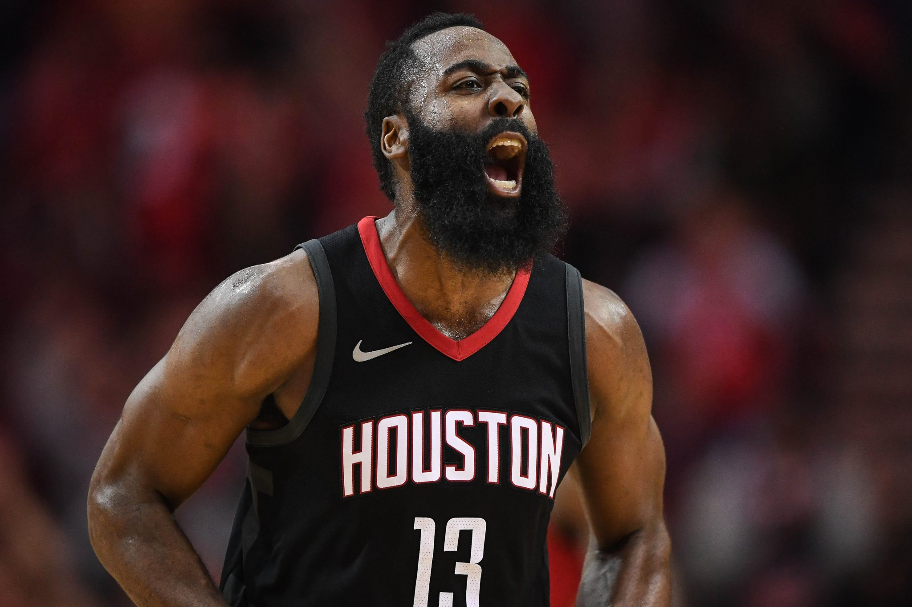
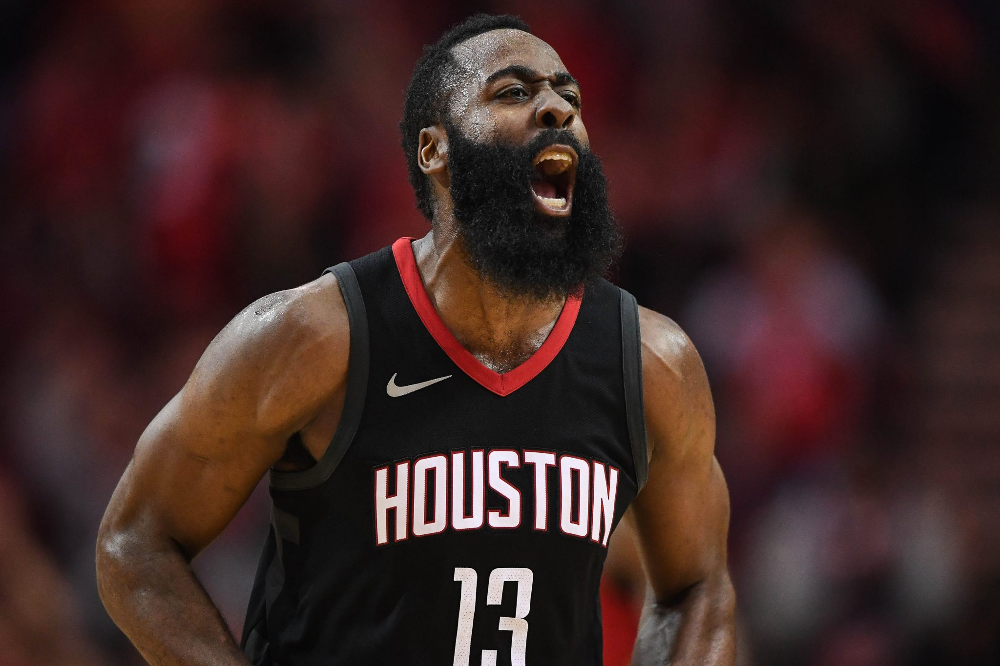

10 kyrie irving Current team Brooklyn Nets.


Kyrie Irving is a 6'2 guard 27 years old he is the best dribbler right now probably one of the best of all time. Before Kyrie got hurt he was averaging 27.4 PPG with 6.4 APG. Kyrie on some nights will drop 40 points even 50 points, but he lacks on defence. Also is a bad team he ball hogs a lot and makes his team mates look bad too. it was difficult to put either Damian Lillard or Kyrie Irving in the top ten.
important other Information
- Played 9 seasons Went to playoffs 4 times
- 6 time All star
- 1 time All star MVP
- Won Rookie of the year
9 Russell Westbrook Current team Houston Rockets.


Russell Westbrook is 31 years old he is 6'3 and this man was basically a walking triple Double. Russell Westbrook averages 27.4 PPG 8.0 RPG and 7.1 APG he is an excellent finisher at the rim for his height but lacks in shooting. some nights his jumpshot is wet others can't go in at all. Also lacks to lead his team in the playoffs because their is some nights where, he doesn't care about winning but cares for getting a triple double. If he makes his jumpshot more constantly and change his ways, of playing basketball he can definitely be in the top 5.
important other Information
- Played 12 seasons Went to playoffs 9 times
- 9 time All star
- 2 time All star MVP
- 2016 season MVP
- 2 time scoring leader
- 2 time assists leader
8 Luka Doncic Current team Dallas Mavericks.


Luka Doncic is putting up 29.0 PPG 9.5 RPG and 8.8 APG he is only 21 years old playing guard at 6'7. Even though he hasn't been in the league for long, putting up those numbers are still impressive especially at that age. luka Doncic is not that good of a shooter but still can shoot from range Nba players still respect his shots, he is good at finishing at the rim it is hard to block him since he is tall. Luka Doncic still need to work on his shot, but if the game is on the line he is the man that you will goto.
important other Information
- Played 2 seasons
- 1 time All star
- Won Rookie of the year
7 Anthony Davis Current team Los Angeles Lakers


Anthony Davis is 27 years old 6'11 and he been improving every year he is averaging 26.4 PPG 9.4 RPG and 3.2 APG. if keeps doing this for a couple more years he will be in the Hall Of Fame, also he is one of the best Big men in the Nba. Even if he doesn't have much experience in the Nba playoffs he is playing with Lebron James, helping the Los Angeles Lakers. Davis have been taken care of his body so hopefully he will play in the playoffs without getting hurt.
Important other Information
- Played 8 Nba seasons went to playoffs 2 times
- 7 time All Star played 6 times
- 1 time All star MVP
- 3 time block leader
6 James Harden Current team Houston Rockets.
 


James Harden is 30 years old putting up 34.3 PPG 6.4 RPG and 7.5 APG at 6'4. James Harden may be the best offensive player of all time, he finds new ways how to get open and be creative to get to the basket. James Harden isn't known for defense at all only offence. James Harden has one of the Hardest step-back to guard his step-back creates so much space to shoot, when he does it there is a good chance that he will get foul especially at the 3 pointer. The thinking ability of scoring 40, 50 or even 60 points with a triple double is ridiculous. if he could only play defense he could easily be top 3.
Important Other Information
- Played 11 seasons went to playoffs 10 times
- 8 time All star
- 1 time season MVP
- 1 time Six man of the year
- 2 time scorer leader
- 1 time Assists leader
5 Stephen Curry Current Team Golden State Warriors.


Before Stephen curry broke his hand not able to play for the rest of the season. Curry had 20.8 PPG 5.2 RPG and 6.6 APG, Curry is 32 years old and definitely one of the best shooters of all time Curry can shoot from anywhere on the court constantly and can shoot very far too. Curry shot is fast and very hard to guard, you must at all times can't give room Curry to shoot, if you give him any kind of openness he will make it all day. He will shoot it in your face and make it over you as well. Curry have lots of sets plays with his team to get open since Nba players gives him Barely any room to dribble.
important other information
- Played 11 seasons went to playoffs 7 times
- 3 time nba champion
- 6 time All star
- 2 time season MVP
- 1 time scoring leader
- 1 time steals leader
4 Kevin Durant Current Team Brooklyn Nets.


Even though Kevin Durant didn't play this season cause of an injury. He is still a top 5 player Kevin Durant was putting up last season 26.0 PPG 6.4 RPG and 5.9 APG, he is 6'10 Small Forward and lengthy Kevin Durant is able to play all 5 Positions. He can finish at the rim shoot from deep and make it constantly also has great inside and perimeter defense. but lacks on size and strength, if you have strength and size you will be able to push and bully Kevin Durant around.
Important other Information
- Played 12 seasons went to playoffs 9 times
- 2 time nba champion
- 10 time All star
- 2 time All star MVP
- won Rookie of the year
- 1 Season MVP
- 4 time scoring Leader
- 2 time Finals MVP
3 Kawhi Leonard Current Team Los Angeles Clippers.


Kawhi leonard is 29 years old 6'7 forward he is putting up 26.9 PPG 7.2 RPG and 4.9 APG. Kawhi is the best lockdown defender in the league probably one of the best of all time. if you expect to drop 20 or 30 on Kawhi easy think again. Kawhi isn't scared to guard anyone you can be 7 feet he will guard you, if you 6'2 thinking you will blow by him easy think again. Kawhi have a long wingspan for his height and have fast feet, Kawhi isn't much of a talker on the court. But one thing for sure if Kawhi is guarding you he will make scoring a basket feel physically impossible.
Important other Information
- Played 9 seasons went to playoffs 7 times
- 2 time nba champion
- 4 time all star
- 1 time all star MVP
- 2 time Finals MVP
- 1 time steal leader
- 2 time defensive player of the year
2 Lebron James Current Team Los Angeles Lakers.


Lebron james is 35 years old putting up 25.3 PPG 8.0 RPG and 10.3 APG that age is really impressive. Lebron has high IQ and passing verion when he drives he see a open team already. lebron always wants him team mates involve in the offence and makes his team mates better. lebron is still a excellent finisher and slasher at the rim, with his unstopped signature 3 point shot. lebron still have good defense but it gets worst when he gets older, he can be consider the best nba right now and all time. there won't be a another nba player even close to him he has taken care of his body for more than 12 years, hasn't gotten any seriously injury and putting up good numbers at a old age.
Important other information
- Played 17 seasons went to playoffs 13 times
- 3 time nba champion
- 16 time all star
- 3 time all star MVP
- 4 time season MVP
- 3 time finals MVP
- 1 time scoring leader
1 Giannis Antetokounmpo Current Team Milwaukee Bucks


It was hard to put Giannis or lebron at first. Giannis Antetokounmpo is a walking bucket at age 25 he puts up 29.7 PPG 13.7 RPG and 5.8 APG at 6'11 and lengthy. Giannis is the hardest play to stop, 1 he is very tall and plays small forward 2, he is fast for that height and, 3 when he does layups or dunks he covers so much ground. As soon he blows you to go in the paint you are not stopping him. Giannis have strength muscle and size Nba players have to double team or some times triple team when he goes in the paint. if you are in the paint don't even try to block his shot take a charge instead. Giannis has great inside and Perimeter defense. Even though he lacks on his jumpshot it gets better every year and giannis improves all around ever year. All Giannis needs is a constantly jumpshot and he will definitely be the best nba player and probably be in the 10 of all time.
- played 7 seasons went to playoffs 4 times
- 4 time All star
- 1 most improve player
- 1 season MVP